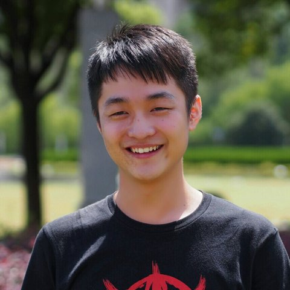

Software Engineer · AI Agent Observability & Data Infrastructure
I build the tracing platform behind UiPath’s AI agents — high-volume trace ingestion, a low-latency hot storage layer for live agent runs, a Snowflake warm layer for permanent storage and analytics, and the ETL pipelines and APIs that connect them. Owned end-to-end: design → deployment → on-call.

The tracing platform for UiPath’s AI agents. A trace records every step of an agent’s execution — tool calls, memory injections, LLM conversations — as spans; the platform ingests and persists tens of millions of trace requests per day.